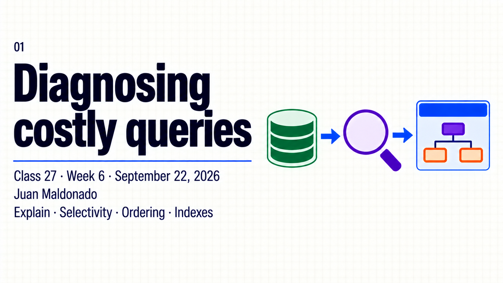
Topic summary
A query can return two correct pages while examining many candidates. Its result limit describes the window delivered to the caller, while filtering, access checks and sorting may require more work. Diagnosing Guide List starts with its content contract and the access path selected by Oak.
This session connects the query to its plan and observed work. Compare the intended subtree with an overbroad root, separate estimated cost from scan counts and elapsed time, then inspect the selected index definition. Correct the query when that solves the problem; propose an index change when evidence shows a coverage gap.
- Few hits do not prove low query cost.
- Distinguish repository traversal from excessive scanning through an index.
- Inspect node type, path, property restrictions and ordering.
- Separate EXPLAIN, MEASURE and execution options.
- Compare results and observations under controlled conditions.
- Review existing index coverage and the Cloud deployment process.
30-minute agenda
| Time | Slides | Focus |
|---|---|---|
| 0–5 | 1–3 | Result size, query work and planning. |
| 5–11 | 4–6 | Restrictions, scope and Explain/Measure. |
| 11–23 | 7–8 | Local demo and comparable evidence. |
| 23–27 | 9–10 | Index definition and Cloud workflow. |
| 27–30 | 11–12 | Key takeaways and questions. |
For a 60-minute session, add 20 minutes of guided inspection and 10 minutes of questions. The instructor supplies the local fixture; previous practice completion is not required.
Complete slide deck
Copy each complete numbered image to PowerPoint or download its PNG.
{kind=link}
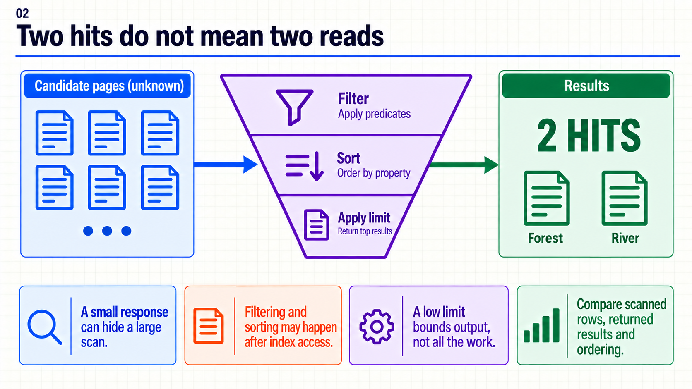
{kind=link}
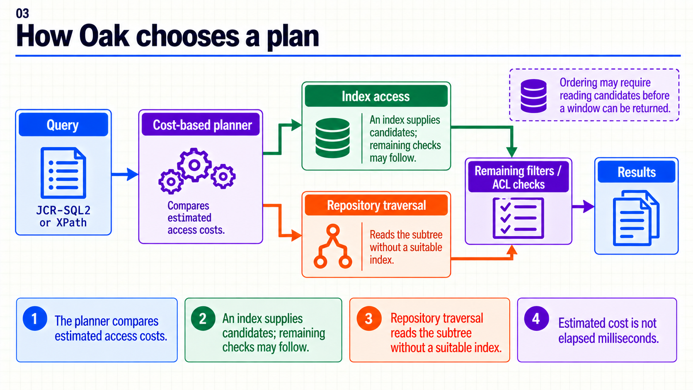
{kind=link}
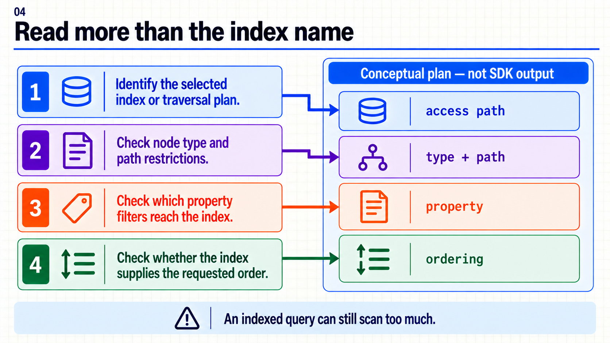
{kind=link}
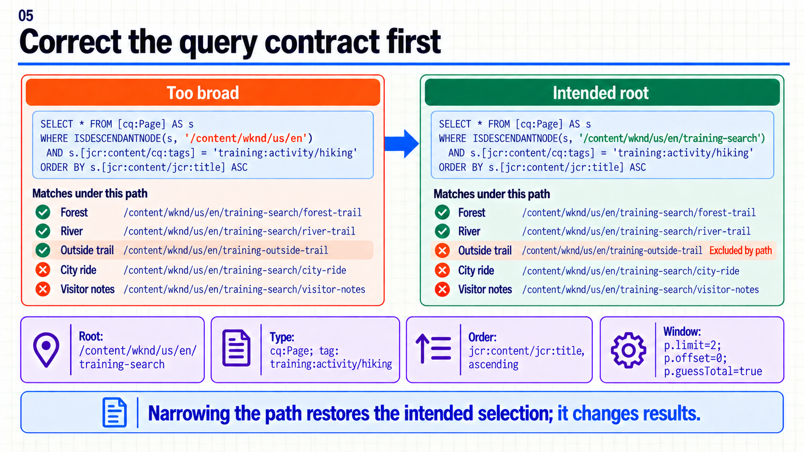
{kind=link}
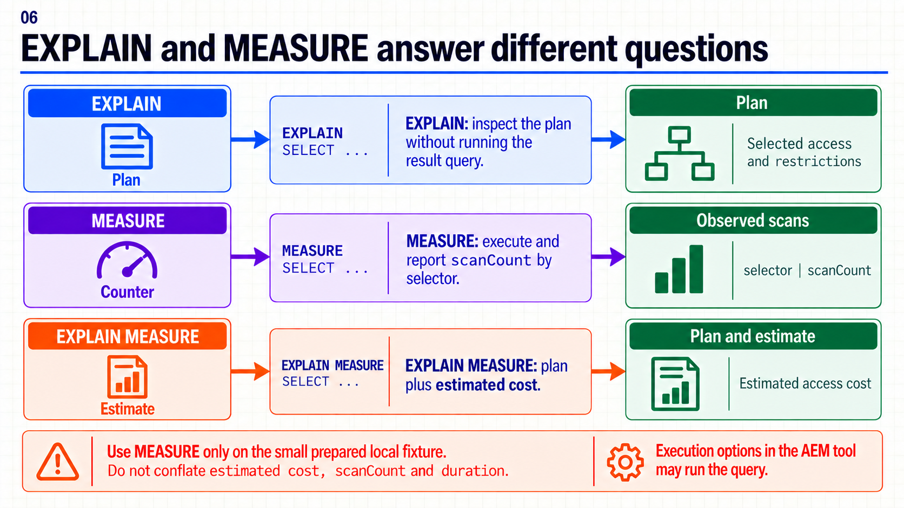
{kind=link}
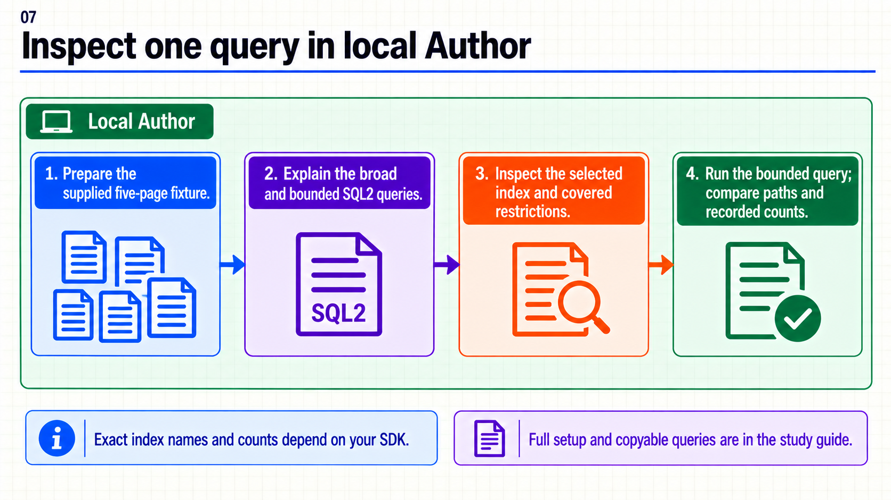
{kind=link}
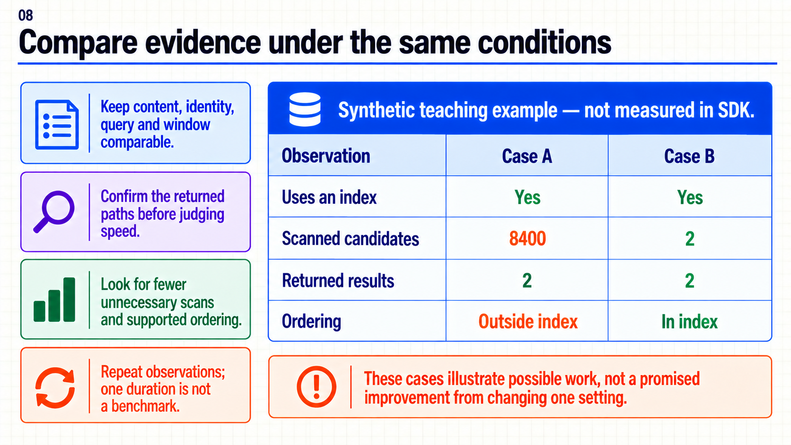
{kind=link}
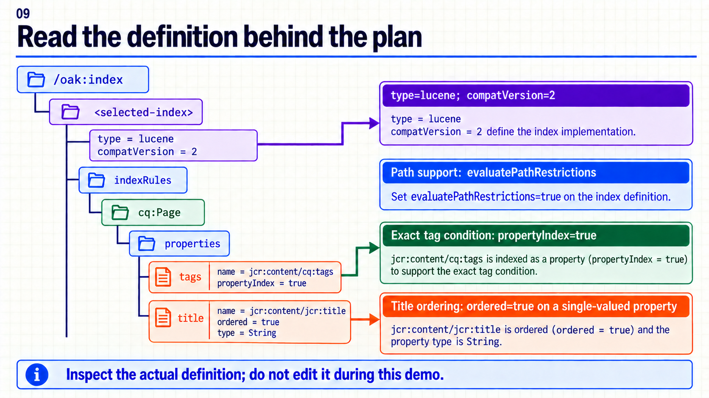
{kind=link}
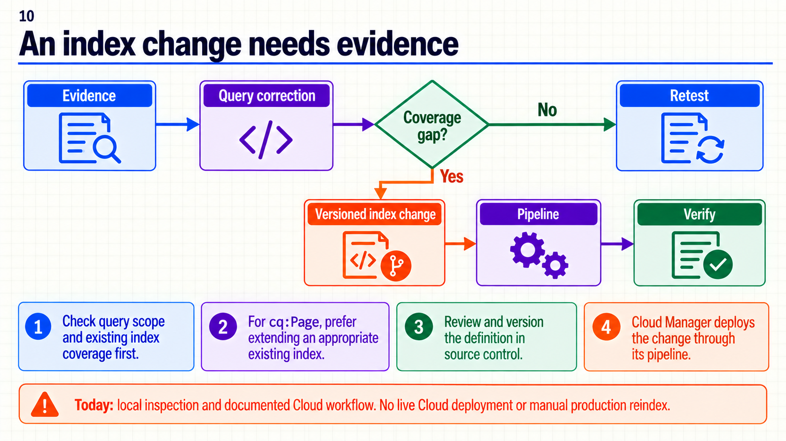
{kind=link}
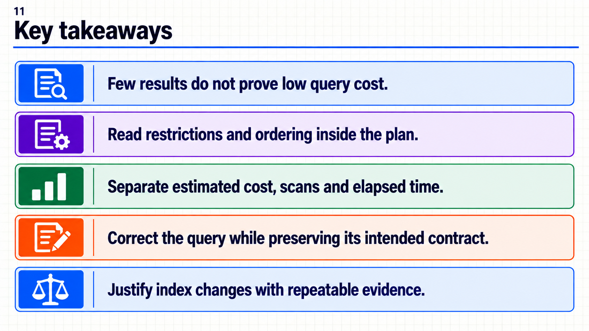
{kind=link}
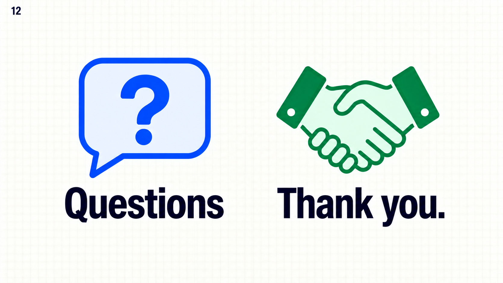
{kind=link}
Consultas copiables y diagnóstico local
Para las diferencias entre EXPLAIN, MEASURE y las opciones de ejecución, consulta la explicación completa. La tabla de comparación incluida abajo es sintética.
3. Ejemplo completo en Author local
A. Preparar un punto de partida independiente
Necesitas un SDK Author con WKND o un sitio de Archetype, una plantilla de página habilitada y una cuenta local con permisos para crear páginas/tags y abrir las herramientas de diagnóstico. El instructor prepara este conjunto aunque nadie haya hecho la sesión anterior. No hace falta implementar Guide List ni disponer de Cloud Manager.
- Inicia sesión en
http://localhost:4502. Si usas otro puerto, adapta las direcciones de esta guía. - En Tools → General → Tagging, crea el namespace
training(título Training), el tag contenedoractivity(Activity) y sus hijoshiking(Hiking) ycycling(Cycling). Reutilízalos sólo si pertenecen al ejemplo. El ID de Hiking debe sertraining:activity/hiking. - En Sites, crea el padre
training-searchbajo/content/wknd/us/en, con la plantilla habilitada de tu sitio. Crea las cuatro primeras páginas dentro de él y la quinta al lado del padre. - Asigna los tags con Properties → Basic → Tags → Save & Close. Mantén sin tags el padre y Visitor notes. Comprueba que Cycling no tenga también Hiking.
- Si usas Archetype, sustituye
/content/wknd/us/enpor tu raíz real en todos los archivos. Sitraining-searchcontiene otros datos, usa un nombre nuevo y actualiza las consultas; no sustituyas contenido ajeno.
| Ruta respecto de la raíz del sitio | Título | Tag |
|---|---|---|
training-search/forest-trail |
01 Forest trail |
Hiking |
training-search/river-trail |
02 River trail |
Hiking |
training-search/city-ride |
03 City ride |
Cycling |
training-search/visitor-notes |
04 Visitor notes |
Ninguno |
training-outside-trail |
05 Outside trail |
Hiking |
Inspecciona forest-trail/jcr:content en CRXDE Lite local: jcr:title y cq:tags deben coincidir. Guarda el contenido y comprueba que la consulta ya ve las dos páginas antes de comparar. Los índices asíncronos pueden tardar en reflejar cambios; no interpretes una actualización pendiente como prueba de que falta un índice. Tagging — Adobe, modos de indexación — Oak.
B. Comprobar la selección y su ventana
Abre el QueryBuilder Debugger local, pega el archivo completo y pulsa Search. Deja desactivada Query is given as URL si aparece. La ventana esperada es Forest y River, en ese orden.
Descargar querybuilder.properties
path=/content/wknd/us/en/training-search
type=cq:Page
property=jcr:content/cq:tags
property.value=training:activity/hiking
orderby=@jcr:content/jcr:title
orderby.sort=asc
p.limit=2
p.offset=0
p.guessTotal=true
Esta consulta conserva el contrato de la 26. p.guessTotal=true reduce la necesidad de contar todo, pero no arregla una propiedad sin cobertura ni un orden costoso. No uses p.limit=-1 para un listado de navegación. QueryBuilder y guessTotal — Adobe.
La selección equivalente en SQL2 es:
SELECT * FROM [cq:Page] AS page
WHERE ISDESCENDANTNODE(page, '/content/wknd/us/en/training-search')
AND page.[jcr:content/cq:tags] = 'training:activity/hiking'
ORDER BY page.[jcr:content/jcr:title] ASC
Para ejecutar esa misma ventana en una consola SQL2, configura límite 2 y offset 0 cuando existan esos campos; en código JCR son Query.setLimit(2) y Query.setOffset(0). Si el formulario no los expone, compara sólo selección y orden sobre el conjunto pequeño. El archivo no incorpora paginación. API JCR Query.
C. Explicar la raíz amplia y la raíz correcta
- Abre Query Performance local. Elige Explain Query y JCR-SQL2.
- Para esa interfaz, pega el
SELECTdeguides.sql2, sin prefijo EXPLAIN, y deja desmarcadas las tres opciones de ejecución Include Execution Time, Read first page of results e Include Node Count. Pulsa Explain. - Conserva el texto del plan y las cuatro observaciones de la guía: acceso elegido, tipo/ruta, propiedades y orden. El nombre/versionado del índice depende de tu SDK: no esperamos un
cqPageLucenecon sufijo fijo. - Cambia sólo la raíz a
/content/wknd/us/eny vuelve a explicar con las mismas opciones. Es una selección más amplia: Outside trail pasa a estar dentro del alcance. No la ejecutes ni midas para buscar un tiempo lento; explicar basta para compararla. - Restaura la raíz
training-search. Compara acceso, restricciones y orden. Es válido que ambas consultas seleccionen el mismo índice. Eso no demuestra que tengan el mismo trabajo ni que el índice sea insuficiente.
Alternativa en CRXDE Lite: abre Tools → Query, selecciona JCR-SQL2 y ejecuta uno de estos archivos completos. Aquí sí se incluye EXPLAIN: el resultado es el plan, no las páginas. No pegues ambas sentencias a la vez.
EXPLAIN
SELECT * FROM [cq:Page] AS page
WHERE ISDESCENDANTNODE(page, '/content/wknd/us/en')
AND page.[jcr:content/cq:tags] = 'training:activity/hiking'
ORDER BY page.[jcr:content/jcr:title] ASC
Descargar explain-bounded.sql2
EXPLAIN
SELECT * FROM [cq:Page] AS page
WHERE ISDESCENDANTNODE(page, '/content/wknd/us/en/training-search')
AND page.[jcr:content/cq:tags] = 'training:activity/hiking'
ORDER BY page.[jcr:content/jcr:title] ASC
La corrección de raíz cambia intencionalmente la selección para ajustarse al requisito. No presentamos las dos expresiones como equivalentes ni atribuimos una mejora medida a este cambio. La consulta amplia es incorrecta para Guide List aunque el SDK pequeño la ejecute rápido.
D. Observar trabajo en el conjunto pequeño
- Confirma que la raíz de prueba contiene únicamente las páginas suministradas, con dos coincidencias Hiking. Conserva la misma cuenta, contenido y orden.
- En la consola SQL2 de CRXDE Lite, ejecuta
measure-bounded.sql2.MEASUREsí ejecuta y consume resultados: la seguridad del ejemplo depende del conjunto pequeño, no de un supuesto límite dentro del archivo. - Lee cada
selectory suscanCount. Anota también las rutas obtenidas con la consulta normal; los contadores solos no demuestran que los resultados sean correctos. - Si dispones de la tabla de Query Performance, compara sus campos Scanned y Read, conservando sus nombres. No los mezcles automáticamente con
scanCount: pertenecen a salidas distintas y pueden observar diferente cantidad de resultados. - Repite sólo la consulta acotada bajo las mismas condiciones. Una segunda ejecución puede aprovechar caché. No prometas porcentajes de mejora con cinco páginas.
Descargar measure-bounded.sql2
MEASURE
SELECT * FROM [cq:Page] AS page
WHERE ISDESCENDANTNODE(page, '/content/wknd/us/en/training-search')
AND page.[jcr:content/cq:tags] = 'training:activity/hiking'
ORDER BY page.[jcr:content/jcr:title] ASC
Resultado esperado, no ejecución registrada: Forest y River son las dos coincidencias de la consulta normal. Explain muestra el plan que elija tu SDK; Measure informa contadores reales de esa ejecución. No hay un índice ni un número de lecturas garantizados. El material fue revisado contra documentación; no se ejecutó en tu instancia durante su preparación.
Si no puedes abrir Query Performance pero sí CRXDE, usa los archivos SQL2. Si tampoco están disponibles las herramientas o permisos, el instructor demuestra su instancia preparada y el grupo interpreta el caso sintético siguiente. No se requiere cambiar permisos globales ni desplegar índices para terminar la sesión.
4. Comparar evidencia, no sólo el cronómetro
Caso sintético de enseñanza: estos datos son inventados para explicar el diagnóstico, no mediciones del SDK.
| Observación | Caso A | Caso B |
|---|---|---|
| Usa un índice | Sí | Sí |
| Candidatos examinados | 8400 | 2 |
| Resultados devueltos | 2 | 2 |
| Ordenamiento | Fuera del índice | Dentro del índice |
Ambos casos entregan dos resultados. A exige investigar qué trabajo queda fuera del acceso; B ilustra una ejecución con poco descarte. La tabla no establece un umbral universal, no prueba que las ACL sean iguales y no predice que cambiar la ruta produzca exactamente B.
Para una conversación técnica basta conservar: consulta exacta, instancia/build del SDK, identidad usada, contenido y momento, límite/offset, plan, rutas de resultados y métricas con su nombre original. Es una ayuda de diagnóstico voluntaria, no una entrega evaluada. Si cambias una condición, anótala para no comparar experimentos diferentes.
5. Leer una definición de índice
Desde el plan real, localiza el nodo indicado bajo /oak:index en CRXDE local y sólo inspecciónalo. Busca type, compatVersion, configuración asíncrona y reglas que cubran cq:Page. En las propiedades, name puede ser una ruta relativa o una expresión configurada; los nombres de nodos auxiliares no tienen que llamarse tags y title.
Este fragmento ilustrativo representa el nodo properties dentro de indexRules/cq:Page. Es un material de lectura, no una definición completa ni un paquete instalable. No se debe importar ni usar para reemplazar un índice existente.
Descargar properties-review.json
{
"jcr:primaryType": "nt:unstructured",
"tags": {
"jcr:primaryType": "nt:unstructured",
"name": "jcr:content/cq:tags",
"propertyIndex": true
},
"title": {
"jcr:primaryType": "nt:unstructured",
"name": "jcr:content/jcr:title",
"propertyIndex": true,
"ordered": true,
"type": "String"
}
}
propertyIndex aporta soporte para condiciones sobre la propiedad; ordered habilita su uso para ordenar y aumenta el trabajo/espacio de indexación. El título es monovalor en el ejemplo: no actives ordered sobre el array cq:tags. evaluatePathRestrictions permite resolver la restricción de ruta dentro del índice Lucene. includedPaths define qué se indexa y queryPaths interviene en qué consultas lo pueden seleccionar; deben alinearse. Definición de índices Lucene — Oak.
En una revisión Cloud comprobaríamos type=lucene, compatVersion=2 y un modo async admitido, además de las reglas necesarias. Para páginas, primero revisamos la extensión de un índice existente apropiado; no recortamos sus rutas o reglas compartidas con otras funcionalidades. Si se justifica un índice completamente nuevo, también se revisan su alcance y la política de selección por index tag. Ese index tag no es el tag editorial training:activity/hiking. Índices Cloud — Adobe, selección por tags — Oak.
6. Decidir el siguiente cambio
| Hallazgo | Siguiente paso |
|---|---|
| La raíz o filtros contradicen el requisito. | Corrige la consulta y vuelve a comprobar incluidos/excluidos. |
| Aparece traversal. | Revisa consulta, definición disponible y plan; identifica la cobertura que falta. |
| Hay índice, pero muchas lecturas. | Busca filtrado posterior, orden, conteo, offset y restricciones poco selectivas. |
| Los resultados nuevos aún no aparecen. | Comprueba guardado, ruta, identidad y actualización del índice. |
| Falta cobertura después de corregir la consulta. | Documenta el caso y revisa una extensión versionada del índice adecuado. |
En Cloud, una modificación se versiona en el proyecto y se despliega mediante el pipeline de Cloud Manager. Se comprueban las consultas afectadas y la compatibilidad con el despliegue; editar un índice de producción o marcar reindex=true a mano no forma parte de ese proceso. La definición local puede diferir de la Cloud. Aquí leemos el flujo documentado, sin asumir acceso ni ejecutar un despliegue. Despliegue de índices — Adobe.